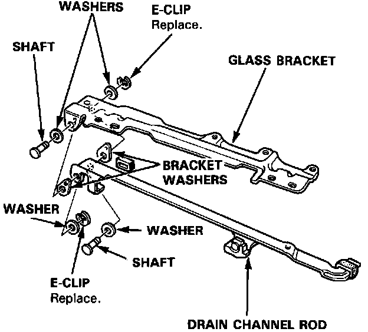
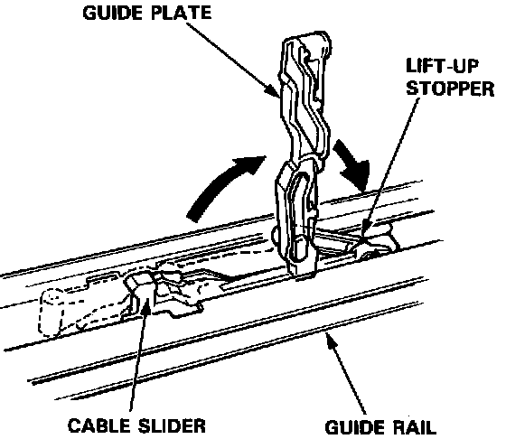

Guide Plate Replacement
Guide Plate Replacement1. Remove the glass bracket.

2. Pry the E-clips and remove the shafts, then separate the glass bracket and drain channel rod.

3. Remove the guide plate from the lift-up stopper.